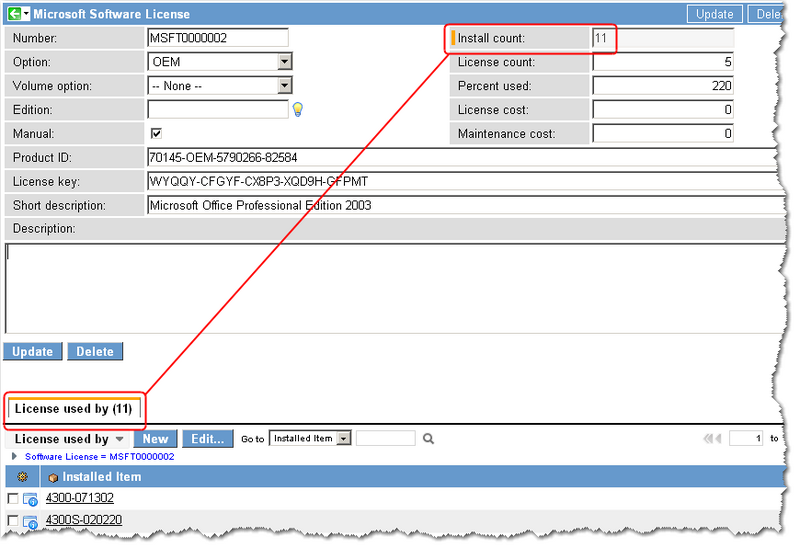
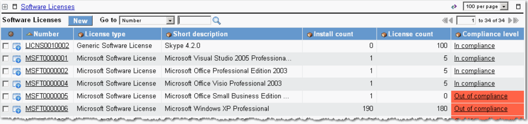
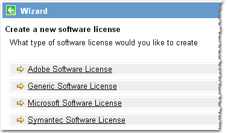
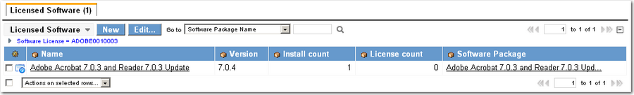

Software License Counts and Compliance Checking
| |
Note: This article applies to Fuji and earlier releases. For more current information, see Configuration Management at http://docs.servicenow.com
The ServiceNow Wiki is no longer being updated. Visit http://docs.servicenow.com for the latest product documentation. |
Contents
1 Overview
The Software Asset Management Extensions plugin automatically enables software licensing functionality, which compares installed software with actual license counts, and then checks to ensure that software usage is in compliance with the number of licenses purchased. If you have installed the Discovery Plugin, the Software Asset Management Extensions plugin is activated automatically. You can link software usage to the CMDB automatically or manually. The platform can adjust install counts automatically when software is added to or deleted from configuration items (CIs).
| |
Note: For more information, see Software Asset Management and Upgrading to Software Asset Management. |
2 Selecting a Licensing Method
The two software licensing applications in ServiceNow, Software Asset Management Extensions and Software License Management, have different table structures and are not integrated. Use whichever functionality suits your business needs, but do not use the two features together to manage software licenses. There is no migration path between the two applications, and records created in Software Asset Management must be recreated manually in Software License Management.
The following diagram shows the table relationships between Discovery, Software License Management and Software Asset Management. The connectors in the diagram show the tables that reference fields from another table. (The direction of the connector is from the circle end out to the table containing the field being referenced.)
{kind=link}
2.1 Software License Management
Software License Management (SLM) manages software licenses on the user and infrastructure level and calculates compliance based on locale. All software licenses are stored in one of three tables:
- slm_license_usage
- slm_license_infrastructure
- slm_license_complex
2.1.1 Supported Features
These features are supported in the base system Software License Management application.
2.1.1.1 Locales
Software License Management (SLM) offers three levels of entitled locales as conditions of license compliance: Company, Location, and Department. Calculate compliance for licenses at the company level or narrow the focus to licenses within individual departments at specific company locations.
2.1.1.2 License Modeling
SLM includes the following license types:
- Usage: software license usage based on named or concurrent users, whose compliance is calculated from the entitled locality (Company, Location, or Department).
- Infrastructure: software license usage based on configuration items (CI). SLM can calculate compliance based on CI attributes, such as CPU count, as well as locality.
- Complex: a mix of related licenses, including usage, infrastructure, and other complex licenses. A type of complex license called a cluster license enables an administrator to evaluate compliance for infrastructure license counts in the cluster instead of at the license level. Cluster licenses can calculate compliance for multiple infrastructure licenses connected to the same software package.
2.1.2 Unsupported Features
The following features are not supported in the base system Software License Management application, but can be customized into the system.
- Group multiple, related software packages into one, master package.
- Discover Microsoft license keys.
- Manually associate licenses with computer CIs.
2.2 Software Asset Management
The Software Asset Management Extensions plugin compares installed software with actual license counts, and then checks to ensure that software usage is in compliance with the number of licenses purchased. This application calculates compliance based on infrastructure licenses (computer CIs) only. Each software license is stored in a separate table extended from the base table (ast_license_base). The following tables are provided in the base system:
- ast_license_adobe
- ast_license_msft
- ast_license_symantec
- ast_license_generic
2.2.1 Supported Features
- Allows grouping of multiple software packages into a single license. This feature enables tracking of multiple minor versions of a software package within a single license.
- Allows an administrator to link licenses manually to computer CIs.
- Supports the Discovery of Microsoft operating system license keys.
2.2.2 Unsupported Features
- Modeling is not supported. Software licenses are intended only for software packages and are based on infrastructure licenses only.
- Compliance checking for locales is not supported.
3 Management Options
The ServiceNow platform offers three methods for managing software licenses:
- Discoverable: Intended for customers who use Discovery or Help the HelpDesk to manage their software licenses.
- Non-discoverable: Intended for customers who want to calculate install counts based on software packages.
- Manual: Allows customers to manage licenses manually, without using Discovery.
To set the management option, navigate to Asset Contracts > Software Licenses. Microsoft products use a default setting of Discoverable key, and generic software products use the Manual setting. The Discoverable key check box is visible only when the Manual check box is cleared. To set the method to Non-Discoverable, clear both check boxes.
{kind=link}
3.1 Discoverable License Counts
Discoverable license counts are intended for customers who use Discovery or Help the HelpDesk. By default, all Microsoft software is configured with the Discoverable key flag set to true.
3.1.1 How Discoverable License Counts Work
A scheduled job named Count Software Licenses runs daily and calculates the install_count and license_count fields in both the software package table and the asset license table. The scheduled job performs the following four tasks:
- Calculate install_count of package: This task looks at each software package and counts how many CIs are tied to it through the software instance (cmdb_software_instance) table.
- Calculate install_count of licenses: This task calculates the install count of the license table based on the number of entries in the License Used By Related List, which is the ast_license_software_instance table. For example, if License A is used by 10 computers, then the install count will be 10.
- Calculate license_count of packages: This task reflects the license count on the license table on the software package table. For example, if License A is tied to Software Package X, then the license count of Software Package X would be set to the license count of license A. If license A has a license count of 20, then the license count of Software Package X would be set to 20 as well.
- Calculate install_count/license_count of bundle: This task calculates the install count and license count of the bundle license (ast_software_license) table. For example, there are 3 asset licenses for 3 different versions of the same software (Quicken v3.0, Quicken v4.0, and Quicken v5.0). Each has an install count of 10 and an license count of 100 (which means there are 10 of each Quicken versions installed on 10 computers, and each Quicken version has a license count of 100). If each of these licenses points to the same Quicken bundle license, then the Quicken bundle license would have an install count of 30 and a license count of 300.
Another scheduled job named Check contracts and license compliance calculates the compliance checking, which shows if the license is in compliance. To do this, the scheduled job looks at the percentage of the install count with respect to the license count.
The following diagram shows the relationships between CIs, software packages, and license records as controlled by the business rules. License counts and install counts are calculated automatically by Scheduled Jobs that run in the background or from manual settings configured by users. The connectors in the diagram show the tables that reference fields from another table. (The direction of the connector is from the circle end out to the table containing the field being referenced.)
{kind=link}
3.1.2 Discoverable Key, Product ID, and License Key
Several Microsoft products (such as Windows XP and Microsoft Office 2003) store their product ID and license key in the registries of the machines on which the software is installed. This allows Discovery to determine where a specific licensed piece of software is installed in your environment.
To understand how this works, it is important to understand how Microsoft constructs product IDs for their products. The format of a product ID is wwwww-xxx-yyyyyyy-zzzzz.
- wwwww: Microsoft Product Code (MPC) which is a predetermined code for that particular product. For example, 73931 is the MPC for the Office 2003 Professional English version.
- xxx: Channel ID (CID or ChannelID), which is a predetermined code for the channel to which the media belongs - Retail/OEM/Volume License(VL)/Academic/etc. For example, 640 is part of the CID for Volume License.
- yyyyyyy: Installation ID (IID). This is a unique number created at the time of installation, based on the product key used.
- zzzzz: Installation Machine ID (IMID). This is a unique number created at the time of installation based on the hardware of the machine.
Based on this information, we know that a particular Microsoft product from a particular channel, with a specific license key, would have the same "wwwww-xxx-yyyyyy" part of the product ID. Therefore, when Discovery finds an Microsoft software package with a product ID, it checks the license table to see if it already exists, based on the first 3 segments of the product ID. If the package is not already in the license table, we create an entry for it. Also, if the license key is available with the product, Discovery populates that piece of information in the license. Finally, Discovery creates a relationship between the license and the computer CI where the software package resides through the ast_license_software_instance table. These computer CIs are shown in the License Used By Related List for the software license.
{kind=link}
3.2 Non-Discoverable License Counts
A scheduled job named Count Software Licenses runs daily and calculates the install_count and license_count fields in both the software package table and the asset license table. The scheduled job performs the following four tasks:
- Calculate install_count of package: This task looks at each software package and counts how many CIs are tied to it through the software instance (cmdb_software_instance) table.
- Calculate install_count of licenses: This task reflects the install count of the license table on the software package table. For example, if License A is tied to Software Package X (through the ast_license_package_instance table), then the install count of License A would be set to the install count of Software Package X. If Software Package X has an install count of 10, then the install count of License A would be set to 10 as well.
- Calculate license_count of packages: This task reflects the license count on the license table on the software package table. For example, if License A is tied to Software Package X, then the license count of Software Package X would be set to the license count of license A. If license A has a license count of 20, then the license count of Software Package X would be set to 20 as well.
- Calculate install_count/license_count of bundle: This task calculates the install count and license count of the bundle license (ast_software_license) table. For example, there are 3 asset licenses for 3 different versions of the same software (Quicken v3.0, Quicken v4.0, and Quicken v5.0). Each has an install count of 10 and a license count of 100 (which means there are 10 of each Quicken versions installed on 10 computers, and each Quicken version has a license count of 100). If each of these licenses points to the same Quicken bundle license, then the Quicken bundle license would have an install count of 30 and a license count of 300.
Another scheduled job named Check contracts and license compliance calculates the compliance checking, which shows if the license is in compliance. To do this, the scheduled job looks at the percentage of the install count with respect to the license count.
The following diagram shows the relationships between CIs, software packages, and license records as controlled by the business rules. License counts and install counts are calculated automatically by Scheduled Jobs that run in the background or from manual settings configured by users. The connectors in the diagram show the tables that reference fields from another table. (The direction of the connector is from the circle end out to the table containing the field being referenced.)
{kind=link}
There are many software packages for which the license key cannot be discovered by inspecting the machine on which the software is installed. In this case, the Discoverable Key check box should be cleared.
Installed software is counted based on the counts associated with the software packages that you have associated with the software license. In the following example, the install count is 17.
{kind=link}
3.2.1 Counting Installed Software
To count installed software, you must specify the software packages that are part of this software license. You may specify as many packages as you like for a software license. This allows you to group multiple software packages together into a single license, such as when you want to track multiple minor versions of a package within a single license.
The platform counts installed software based on whether or not the license key information can be discovered for an installed software package.
3.3 Manual License Counts
| |
Release: Functionality described here is available with the Spring 2010 Stable 1 release. |
A business rule, named Install Count for manual licenses, runs when you manually assign a license to a CI. This business rule calculates the install_count based on the number of entries in the License used by Related List. The scheduled job Count Software Licenses runs nightly and performs the following task:
Calculate install_count/license_count of bundle: This task calculates the install count and license count of the bundle license (ast_software_license) table. For example, there are 3 asset licenses for 3 different versions of the same software (Quicken v3.0, Quicken v4.0, and Quicken v5.0). Each has an install count of 10 and an license count of 100 (which means there are 10 of each Quicken versions installed on 10 computers, and each Quicken version has a license count of 100). If each of these licenses points to the same Quicken bundle license, then the Quicken bundle license would have an install count of 30 and a license count of 300.
Another scheduled job named Check contracts and license compliance calculates the compliance checking, which shows if the license is in compliance. To do this, the scheduled job looks at the percentage of the install count with respect to the license count.
This diagram shows the relationships between CIs and license records as controlled by the Install Count for manual licenses business rule. License counts are updated immediately by this business rule when a user manually assigns a license to a CI. The connectors in the diagram show the tables that reference fields from another table. (The direction of the connector is from the circle end out to the table containing the field being referenced.)
{kind=link}
To manage license counts manually:
- In the Software License form, clear the Discoverable key check box.
- Select the Manual check box, and update the record.
- Click Edit in the License used by Related List.
- This is the only Related List available in the manual mode.
- Select a device from the list of available CIs and click Save.
- The license count is updated immediately.
- 
{kind=link}
4 Creating Software Licenses
- Navigate to Asset Contracts > Software Licenses.
- In the license list, you can see software types, counts, and compliance.
- 
- Click New to create a new license.
- Select a license type from the Wizard that appears.
- 
- The license form for each type requires slightly different information, but all software license records calculate license and install counts and track compliance.
- If you are creating separate license forms for different versions of the same software (such as Standard, Professional, or Enterprise) make sure to note this in the Short Description field.
- Make sure to enter the number of licenses purchased for this software in the License count field.
- This number is use to calculate compliance. The Percent Used field is updated when the Install Count or the License Count fields are changed. The Percent Used field can be used to support Software License Compliance Checking.
- Click Submit.
- In the Licensed Software Related List, click Edit.
- A slushbucket appears, listing all the software packages from the CMDB.
- Select the make and version of software for which this license record applies, and then click Save.
- The software, version number, and install count are displayed.
- 
{kind=link}
{kind=link}
{kind=link}
{kind=link}